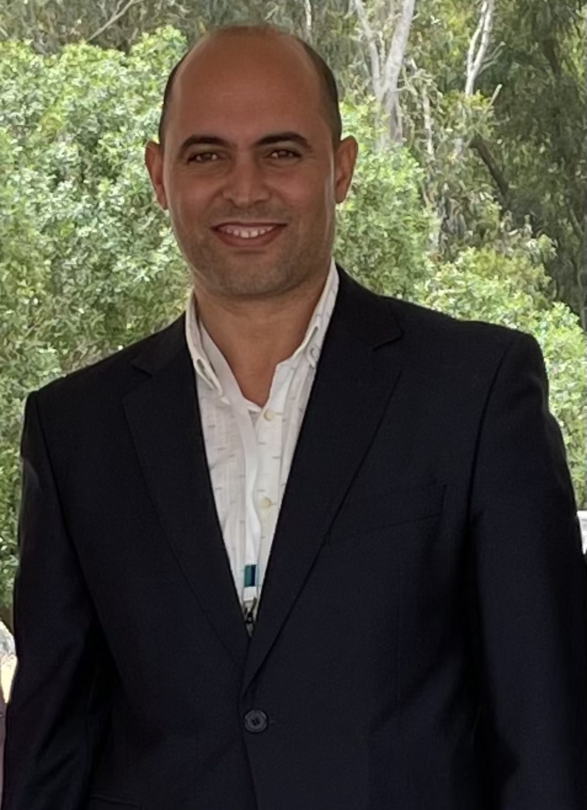

UNE COMMUNAUTÉ, DES EXPERTISES
Les visages
du LRIT.
Des enseignants-chercheurs et des membres associés réunis autour d’une même ambition : produire, transmettre et partager les connaissances.
29Permanents
49Associés

LA DIRECTION DU LABORATOIRE
Pr Khalid Minaoui
Directeur du LRIT depuis 2022 · Faculté des Sciences de Rabat
ANNUAIRE DU LABORATOIRE
Des compétences
qui se rencontrent.
Composition et affiliations reprises de la documentation du laboratoire. PES : professeur de l’enseignement supérieur · MCH : maître de conférences habilité · MC : maître de conférences · DR : docteur.
POUR ALLER PLUS LOIN
Parcourir les publications ↗